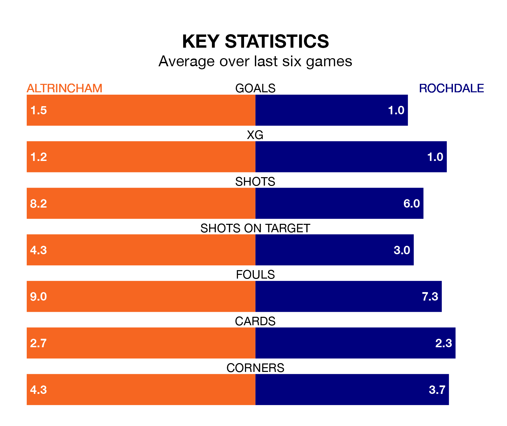

Rochdale travel to Altrincham on late Tuesday in National League.
The visitors come into the game on the back of a win in their last match, having beaten Kidderminster Harriers 2-0 at home, with goals from Ian Henderson and Tyrese Sinclair.
Robins, meanwhile, lost their last match, 2-1 against Chesterfield, with their goal scored by Christopher Conn.
With 49 goals in 27 games so far this season, Altrincham are scoring more than average in the league with 1.8 goals per game. And they are conceding fewer than average, letting in 38 goals at a rate of 1.4 per game.
Rochdale are also above average scorers, with 1.6 goals per game, compared to a league average of 1.5. They have conceded 1.4 goals per game.
Robins are sixth in the table after 27 games, of which they have won 11 and drawn 10, earning 43 points.
The Dale are two places behind the hosts in eighth, with 11 wins and eight draws putting them on 41 points.
Altrincham are in mixed form in National League, with two wins and two draws from their last six games.
And also with two wins and two draws over that period, the away team's form is identical – they have both taken eight points from 18.
Updated: 09:18 (UTC), 23/01/24